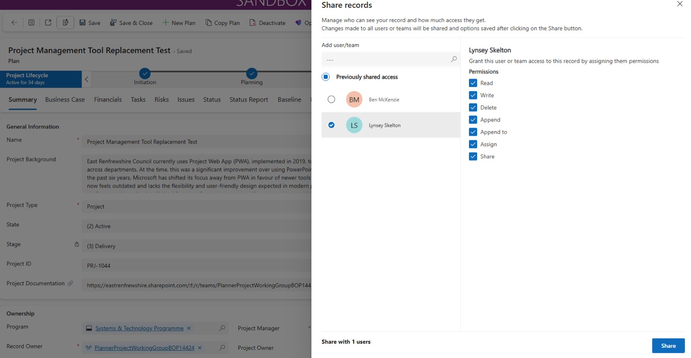
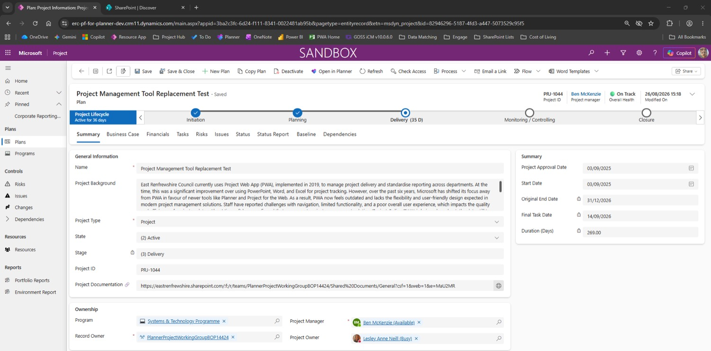
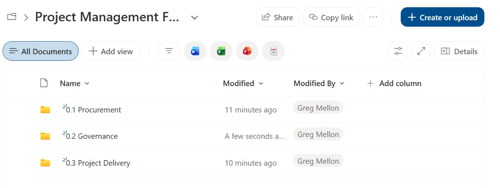

Set up
Sharing, Teams & documents
Who can see your project, where its documents live, and how to connect the two. Project Hub has no document storage of its own — every project needs a Teams site alongside it.
Sharing permissions
Permissions decide who can open your project and what they can do with it. Do this straight after creating the plan — especially for anyone you'll make a risk or issue owner.
Reached from Share ˅1 → Manage Access in the plan's command bar. Names are examples.
- In your plan, select Share in the command bar, then Manage Access.
- Search for the person you want to give access to.
- Select their name, then tick the check box next to it.You can tick several people and give them the same permissions in one go.
- Choose their permission levels — always include Append and Append to.
- Select Share. A notification confirms your changes have been saved.
- Select the × to close the panel.
Risk and issue owners need access firstYou can only make someone the owner of a risk or issue if they have at least Read permission on your project. Share with them before assigning.
What each permission means
| Permission | Lets the person… |
|---|---|
| Read | See the project. The minimum anyone needs — including risk and issue owners. |
| Write | Edit the project's details. |
| Delete | Delete the record. |
| Append Always | Attach other records (like risks and issues) to the project. |
| Append to Always | Let the project be attached to other records. |
| Assign | Hand ownership of the record to someone else. |
| Share | Share the project onwards with other people. |
See the real screen — the Share records panel

Link your project to a Teams site
Project Hub doesn't store documents. Your project's Teams site does — and once it's linked, you get your documents and task notifications right from the plan.
- Tasks in Planner
- Project Documentation link
- Record Owner
- Documents open from the plan
- People get notified when you assign them a task
- The Teams group becomes the Record Owner
- Group members = Teams site members
- Documents library
- Chats
- Members
Don't have a Teams site yet?Request one through the Team request form on the Intranet Applications page ↗ — not through the PMO.
Link it
- From the home page, open your project.
- Go to the Tasks tab.
- Select the Share icon in the toolbar above your schedule.
- Select Add to an existing group.
- Find your Teams site — search, or pick it from the dropdown.
- Select Add. A confirmation shows it's been added.
This can't be undoneOnce a Teams site is linked to a project, it can't be removed. Double-check you've picked the right group before selecting Add.
Add or remove people
- After linking, select See details to view your group.
- Search for a person in Add members and select Invite.
Membership works both waysAnyone you add here joins the Teams group and can see everything in the site — documents, chats and all. Remove someone and they lose access to the Teams site too.
Add the Project Documentation link
Paste a link to your Teams documents into the plan, so you (and anyone with access to the site) can open them in one click. Only people with access to the Teams site will be able to see the documents.
- Select the ▦ waffle icon at the top left of any Office app in your browser (Project Hub, OneNote…).
- Select SharePoint. It opens in a new tab.
- Search for your project's site with the search bar, or select it if it's shown on the Overview page.The site name should match the project name in Project Hub.
- Select Documents to see everything in the site.
- Select Copy link.
- Back in Project Hub, paste the link into Project Documentation on the Summary tab.
- From now on, select the 🌐 globe icon next to the link to open the site.
See the real screen — the link in place, with the globe icon

Recommended folder structure
The PMO recommends the same three folders in every project's documents, so everyone's projects look and work the same way.
Must-havesEvery project should have its Project Brief and PID saved in its documents.
See the real screen — the folders in SharePoint
